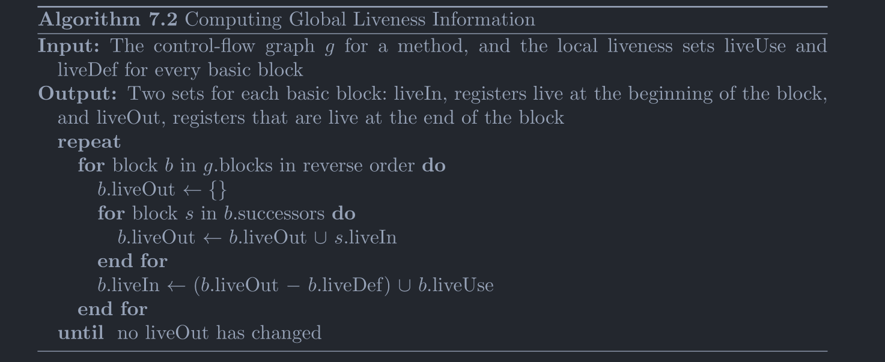

计算Live Interval 发表于 2022-02-21 | 更新于 2023-02-08
在寄存器分配的时候，无论时使用图着色还是线性扫描，都会用到live interval信息：
livenessIntervals
live interval的图示如上，可以看到其中有的变量被分开了几段，每一段是一个range，多个range组成了一个interval，从一个range的开始到结束，变量中的值始终没有被修改，最后一段range的结束点是变量使用的结束点（从编号来说），从此之后变量不再被使用，所以可以看出来这个信息对于寄存器分配是非常重要的。
下面说明一下如何计算得到这个信息。大致有3个步骤：
计算基本块内的LiveUse、LiveDef。
通过每个块内的LiveUse、LiveDef来计算每个基本块的LiveIn、LiveOut。
通过每个基本块的LiveIn、LiveOut来计算live interval。
下面按照步骤来一步一步进行说明。
计算LiveUse和LiveDef
LiveUse和LiveDef是两个集合。
首先来介绍一个叫做使用点和定值点的概念，使用点就是一个变量作为运算数进行运算的点，而定值点就是变量被定值的点，比如：
其中的b和c是运算数，那么这条指令就是b和c的使用点，而a被定值了，那么这条指令就是a的定值点。
对于一个基本块来说如果从入口处到达变量V的某一个使用点没有经过V的定值点（也就是没有出现在LiveDef集合中），那么V就在LiveUse集合中。如果从入口处能够到达一个V的定值点，那么V就在LiveDef集合中，否则变量V在此基本块既没有被使用也没有被定值。
计算的方法是从头遍历每一条指令，然后遍历每个指令的操作数，如果操作数此时没有加入到LiveDef中则加入到LiveUse中，如果指令有对变量定值，那么将被定值的变量加入到LiveDef。
伪代码：
1 2 3 4 5 6 7 8 9 10 11 12 LiveUse <- {}; // LiveUse为空。 LiveDef <- {}; // LiveDef为空。 for 指令 in 基本块{ for 操作数 in 指令{ if (操作数不在LiveDef中){ 将操作数加入LiveUse; } } if (指令存在输出值){ 将输出的变量加入LiveDef; } }
示例：
1 2 3 4 b = w; c = a + b; a = 27; d = a + c;
LiveUse = {a, w} LiveDef = {a, b, c, d}
计算LiveIn和LiveOut
首先说明一下LiveIn和LiveOut的概念。这也是两个集合。
LiveOut，出口活跃，如果从基本块出口处出发的任意路径上能够出现一个use（在定值之前被使用），那么就是出口活跃的。
LiveIn，入口活跃，即从入口处出发的任意路径上能够出现一个use（在定值之前被使用），那么就是入口活跃的。
LiveIn-LiveOut
变量w在B1出口处活跃，而变量q不是活跃的，就是因为在B1中的定值不会传递到使用点。
根据上面概念就可以知道，基本块B的LiveOut事实上就是B的所有后继的LiveIn的并集。而LiveIn则是LiveOut和LiveDef做差集再并上LiveUse。并上LiveUse是因为按照定义，出现了一个从开始的use，做差集的原因是因为中间的Def可能将一些变量杀死了，虽然再出口处也是活跃的但后续使用的并非是入口处那个值了。
计算的方式是求解一个数据流方程：
image-20220222112358798
计算Live Intervals
在计算完LiveIn和LiveOut之后可以进行Live Intervals的计算了。需要注意一点就是，再这里的操作中，将控制流图展平为了一个列表：
cfgReorder
方式大致是：逆序遍历基本块列表，如果变量V在一个基本块的出口处活跃，那么假定变量V的活跃区间是整个基本块，逆序遍历基本块的指令列表，将变量V活跃的区间不断缩短，如果出现了对V的定值，那么对interval就进行一个截断，即使截断之后，如果继续向前迭代遇到了一个对于V的使用，那么插入一个新的range，假定range从此处延续到block开始。
伪代码：
1 2 3 4 5 6 7 8 9 10 11 12 13 for 基本块 in 逆序排列的基本块列表{ for 变量 in 基本块的LiveOut集合中变量{ 延长原有Range或添加新Range(block开始，block结束); } for 指令 in 基本块的逆序排列的指令列表{ if (指令存在定值){ 将被定值的变量的range在此处截断; } for 操作数 in 指令{ 延长原有Range或添加新Range(block开始，指令位置); } } }
这个过程就类似于从后向前生长一样，来看看V33在这个过程中的变化，V33在B3、B2和B1的LiveOut中：
LiveInterval-example
案例演示，太长不说了：
1 2 3 4 5 6 7 8 9 10 11 12 13 14 15 16 import jminusminus.SPIM;public class Fibonacci { public static void main (String[] args) { int a = 0 ; int b = 1 ; while (1000 > b) { SPIM.printInt(b); SPIM.printChar('\n' ); int t = a; a = b; b += t; } } }
IR：
1 2 3 4 5 6 7 8 9 10 11 12 13 14 15 16 17 18 19 20 21 22 23 24 25 26 27 28 29 30 31 32 B0 B1 0: LDC [0] $zero 5: LDC [1] [V32|I] 10: MOVE $zero [V33|I] 15: MOVE [V32|I] [V34|I] B2 20: LDC [1000] [V36|I] 25: BRANCH [LE] [V36|I] [V34|I] B4 B3 30: MOVE $a0 [V37|I] 35: MOVE [V34|I] $a0 40: INVOKESTATIC jminusminus/SPIM.printInt( $a0 ) 45: MOVE [V37|I] $a0 50: MOVE [V33|I] [V35|] 55: MOVE [V40|I] [V34|I] 60: MOVE [V34|I] [V33|I] 65: LDC [10] [V38|I] 70: MOVE $a0 [V39|I] 75: MOVE [V38|I] $a0 80: INVOKESTATIC jminusminus/SPIM.printChar( $a0 ) 85: MOVE [V39|I] $a0 90: ADD [V34|I] [V33|I] [V40|I] 95: BRANCH B2 B4 100: RETURN
LiveUse和LiveDef:
1 2 3 4 5 6 7 8 9 10 11 12 13 14 15 16 17 18 19 B0 liveUse: liveDef: B1 liveUse: liveDef: $zero V32 V33 V34 B2 liveUse: V34 liveDef: V36 B3 liveUse: $a0 V33 V34 V40 liveDef: $a0 V33 V34 V35 V37 V38 V39 V40 B4 liveUse: liveDef:
LiveIn和LiveOut:
1 2 3 4 5 6 7 8 9 10 11 12 13 14 15 16 17 18 19 B0 liveIn: $a0 V40 liveOut: $a0 V40 B1 liveIn: $a0 V40 liveOut: $a0 V33 V34 V40 B2 liveIn: $a0 V33 V34 V40 liveOut: $a0 V33 V34 V40 B3 liveIn: $a0 V33 V34 V40 liveOut: $a0 V33 V34 V40 B4 liveIn: liveOut:
求出的活跃区间为：
1 2 3 4 5 6 7 8 9 10 11 zero: [0, 10] a0: [0, 95] V32: [5, 15] V33: [10, 50] [60, 95] V34: [15, 35] [55, 95] V35: V36: [20, 25] V37: [30, 45] V38: [65, 75] V39: [70, 85] V40: [0, 55] [90, 95]
对应的图为：
livenessIntervals